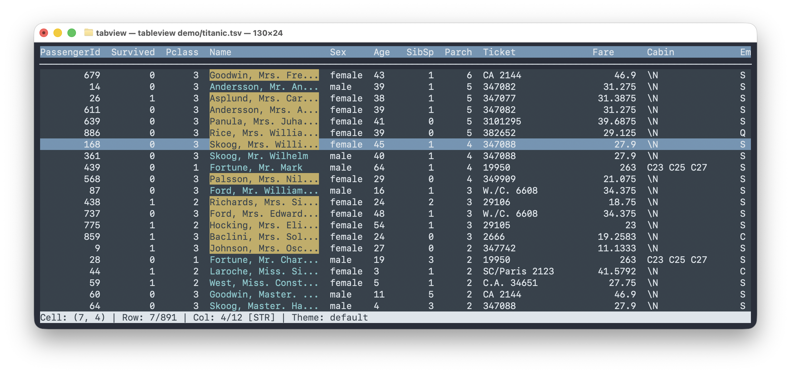
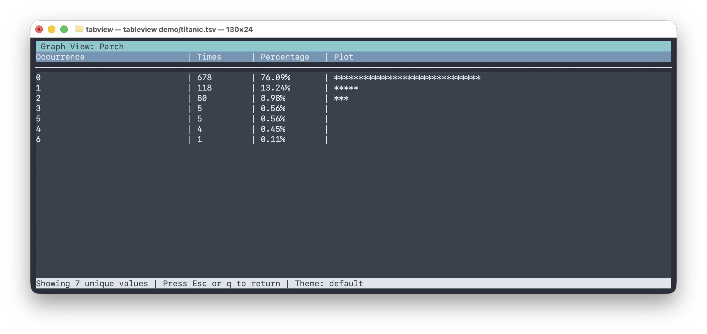

tableview
A terminal UI library for interactive table viewing — sort, search, filter, and visualise tabular data right in your terminal.
Interactive TUI
Sort & filter columns
Full-text search
Frequency histograms
TSV / CSV support
Nim library & CLI
MIT licence

Main table view with interactive navigation, sorting, and search

Built-in frequency histogram for numeric and categorical columns